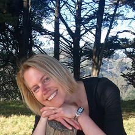
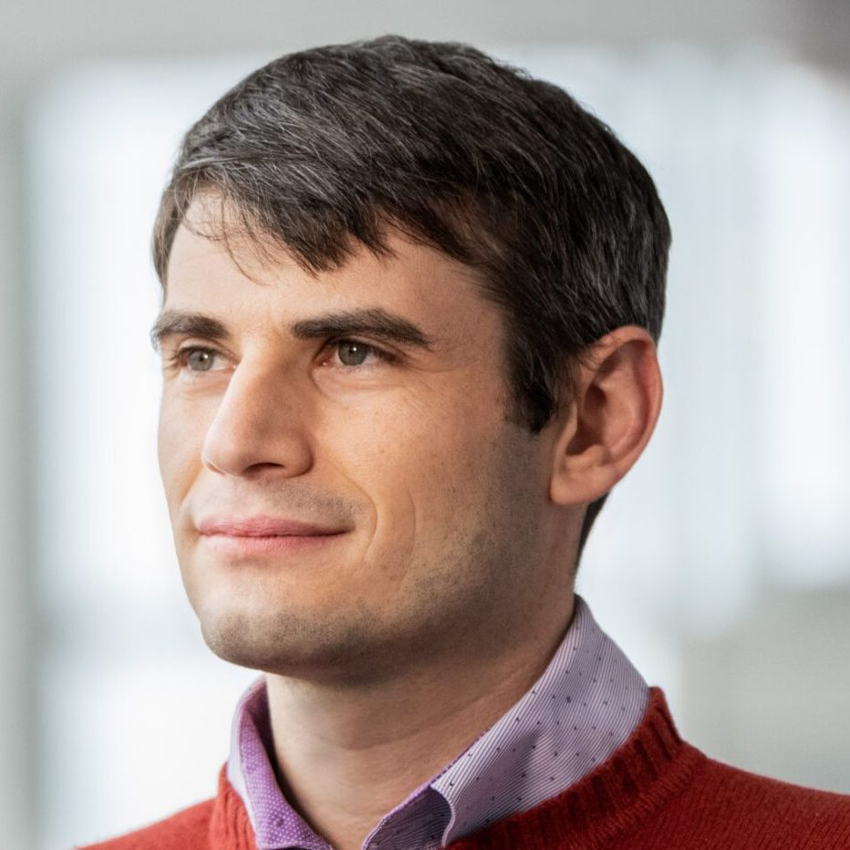

The Boston Symmetry Group organizes events for Boston-area researchers that are interested in the interplay between symmetries and machine learning. Relevant research topics include invariant/equivariant neural networks, symmetries in learning algorithms, graph neural networks, and applications of symmetries in machine learning for physical systems, molecules, social networks, and beyond.
Boston Symmetry Day
Boston Symmetry Day is a biannual meeting of symmetry-minded folks in the Boston area. It is open to registration here for all who would like to attend, subject to space constraints. Registration is free, but we cannot provide travel funding at this time.
First Boston Symmetry Day: April 7, 2023 at Northeastern
The first Boston Symmetry Day will be held at Northeastern University on April 7, 2023 in Shillman Hall Room 335. The schedule will include 8 talks by leading researchers and a poster session where anyone can present a poster on relevant content. We will also provide lunch and a light breakfast, as well as ample time for coffee and networking.
Schedule:
9:00-9:30. Breakfast, registration
9:30-9:40. Opening remarks
9:40-10:10. Talk 1 by Tess Smidt (MIT)
10:10-10:40. Talk 2 by Elisenda Grigsby (Boston College).
“Functional dimension of ReLU neural networks”
10:40-11:00. Coffee
11:00-11:30. Talk 3 by Mario Geiger (MIT).
“Create Equivariant Polynomials with e3nn”
11:30-12:00. Talk 4 by Nima Dehmamy (IBM Research, MIT-IBM Lab).
“Identifying symmetries in the parameter space and data”
12:00-13:30. Lunch
13:30-14:00. Talk 5 by Wengong Jin (Broad Institute).
“SE(3) Denoising Score Matching via Neural Euler’s Rotation Equation — an application to drug discovery”
14:00-14:30. Talk 6 by Steven Gortler (Harvard).
“Invariant Embeddings”
14:30-15:30. Coffee + Poster Session
15:30-16:00. Talk 7 by Shubhendu Trivedi.
“Two displaced vignettes about approximate equivariance”
16:00-16:30. Talk 8 by Robert Platt (Northeastern).
“Applications of symmetric neural models to robots”
Future Events:
Fall 2023: MIT
Mailing List
Beyond information about Boston Symmetry Day, the mailing list also announces events like relevant seminars or talks. It may further be used for relevant discussions and job opportunities.
The mailing list can be found here.
Organizers
|

|

|

|

|

|
Sponsors
We are looking for sponsors to help fund events like Boston Symmetry Day. More information will be made publicly available soon. Please contact us if you are interested.
Social Media

|
Follow us on Twitter @bostonsymmetry for more updates. |